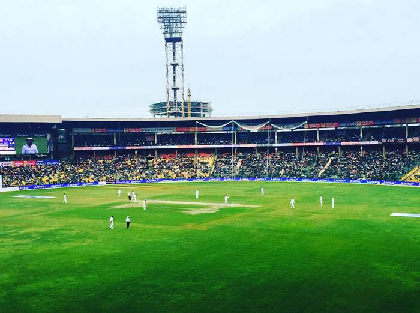

M Chinnaswamy Stadium
FREE

About the stadium
The M. Chinnaswamy Stadium, (Kannada: ಎಂ ಚಿನ್ನಸ್ವಾಮಿ ಕ್ರೀಡಾಂಗಣ) located in Bengaluru, Karnataka, is a stadium owned by the Government of Karnataka. Flanked by the picturesque Cubbon Park, Queen's Road, Cubbon and uptown MG Road, this four decade old stadium is situated in the heart of the city of Bengaluru. Formerly known as the Karnataka State Cricket Association (KSCA) stadium, the stadium was later rechristened in tribute to Mr. Mangalam Chinnaswamy, who had served the KSCA for four decades and was also president of the Board of Control for Cricket in India (BCCI) from 1977–1980. This stadium with a seating capacity of around 40,000[2] not only regularly hosts Test cricket, One Day Internationals (ODI) and other First-class cricket matches, but also other musical and cultural events. The stadium is also the home ground of the Karnataka state cricket team and the Indian Premier League franchise Royal Challengers Bangalore. It is owned by the Government of Karnataka and has been leased out to the KSCA for a period of 99 years.
Number of Tickets Booked
Team A: 8
Team B: 11